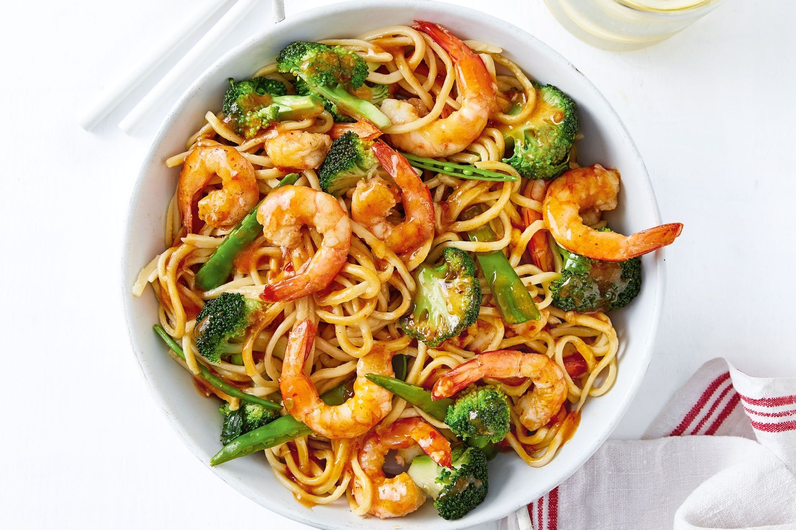

Prawn Stir-Fry

Description
Got prawns? Got 15 minutes? Dinner is sorted with these plump and juicy prawns in a classic ginger sesame Chinese stir fry sauce, with snow peas and broccolini. It’s a Chinese restaurant standard!
Prawns
Garlic and Ginger
Onion
Broccolini
Light soy sauce
Oyster Sauce
Sesame Oil
Cornflour
White Pepper
Steps
Make up stir-fry sauce
Steam Broccolini
Cook prawns
Onions, ginger, garlic
Mix together with sauce